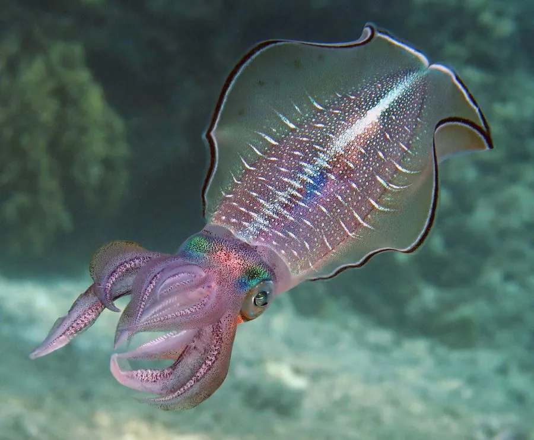

软体动物 · 动物界
莱氏拟乌贼 Sepioteuthis lessoniana

外形介于乌贼和鱿鱼之间的头足类，鳍宽大如乌贼、身体却像鱿鱼，是热带和亚热带沿海重要的经济与养殖种类。
- 分类
- 门软体动物门纲头足纲目枪形目科枪乌贼科属拟乌贼属
- 栖息环境
- 近岸海草床、珊瑚礁和沙泥底质，水深 0–100 m
- 地理分布
- 印度洋—太平洋热带和亚热带沿海，从东非、东南亚到日本南部、澳大利亚，中国南海及台湾周边有分布
- 保护级别
- 暂无评估；中国未列入国家重点保护野生动物名录（经济渔业种类）
物种志
莱氏拟乌贼的体形很像乌贼，躯干宽大，两侧的鳍几乎环绕整个胴部；但它的内部结构属于鱿鱼一类的枪形目，因此得名“拟乌贼”。胴长一般 20–30 cm，最大可达 40 cm，体色可变，常呈半透明的灰褐或黄绿色，皮肤上散布着细小的色素斑点。
莱氏拟乌贼分布于印度洋—太平洋的热带和亚热带沿海，从东非、东南亚到日本南部、澳大利亚，中国南海及台湾周边有分布。它栖息于近岸海草床、珊瑚礁和沙泥底质，水深 0–100 m，是肉食性动物，捕食小鱼和虾蟹。繁殖期在春夏季，雌性把卵囊产在海草和礁石上；寿命约 1 年。莱氏拟乌贼是沿海重要的经济头足类，肉质鲜嫩，可鲜食、烧烤或加工，也有人在沿海开展人工养殖。目前它没有IUCN 的正式评估，中国未将其列入国家重点保护野生动物名录。
形态与习性
- 食性肉食性，捕食小鱼和虾蟹
- 胴长一般 20–30 cm，最大可达 40 cm
- 栖息深度近岸海草床、珊瑚礁和沙泥底质，水深 0–100 m
- 繁殖春夏季产卵，卵囊附着在海草和礁石上
- 寿命约 1 年
- 经济价值沿海重要的经济头足类，可鲜食、烧烤和加工
趣味知识
- 莱氏拟乌贼的外形像乌贼，内部结构却属于鱿鱼一类，因此得名“拟乌贼”。
- 它的鳍几乎环绕整个身体，游动时像一条飘动的裙边。
- 莱氏拟乌贼是沿海重要的经济头足类，已有人工养殖。